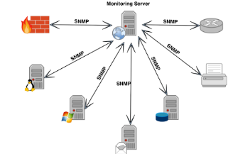
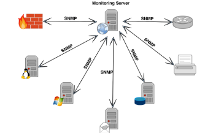
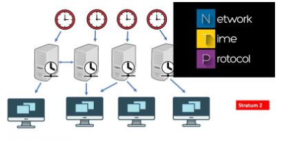
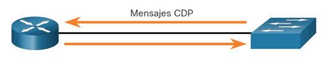

Permite monitorear y gestionar dispositivos de red de forma remota. Esto es crucial para garantizar un alto nivel de disponibilidad y rendimiento de la red.
Permite monitorear y gestionar dispositivos de red de forma remota. Esto es crucial para garantizar un alto nivel de disponibilidad y rendimiento de la red.
Sincroniza el reloj de los dispositivos de red para mantener la hora precisa. Esto es importante para asegurar que los registros de eventos y las transacciones en la red se registren correctamente.
Permite a los dispositivos de red descubrir información sobre otros dispositivos Cisco en la misma red. Esto incluye detalles como el tipo de dispositivo, la dirección IP, el sistema operativo y las interfaces.
Se necesita un servidor para alojar las aplicaciones y servicios de red, como la gestión de usuarios y el almacenamiento de archivos. Esto es esencial para garantizar un funcionamiento eficiente y seguro de la red.